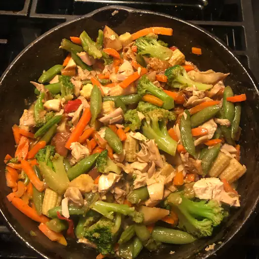

Vegetable Stir-Fry

Experience the Freshness of Vegetable Stir-Fry
Vegetable stir-fry is a vibrant, colorful dish that’s healthy, quick to make, and endlessly customizable. It’s the perfect way to enjoy a variety of fresh vegetables in one satisfying meal. Whether you prefer your stir-fry with rice or noodles, adding a savory sauce and a touch of heat brings all the elements together into a delicious, nutrient-packed dish.
A Wholesome Meal in Minutes
Stir-frying is all about high heat and quick cooking, which helps preserve the color, crunch, and nutrients of your veggies. Start by preparing all your ingredients in advance—this dish moves fast. Cook your aromatics, toss in your vegetables in stages, pour in your sauce, and stir until everything’s coated and just tender. Serve immediately over rice or noodles for a well-balanced, flavorful meal.
Basic Stir-Fry Ingredients
- Bell peppers, sliced
- Carrots, julienned
- Onion, sliced
- Snap peas or green beans
- Broccoli florets
- Vegetable oil or sesame oil
- Garlic, minced
- Ginger, grated or minced
- Soy sauce
- Sesame seeds or chopped green onions
- Cooked rice or noodles (for serving)
- Cornstarch slurry
- Oyster sauce or hoisin sauce
Steps
- Vegetable oil or sesame oil
- Garlic, minced
- Ginger, grated or minced
- Onion, sliced
- Carrots, julienned
- Bell peppers, sliced
- Broccoli florets
- Snap peas or green beans
- Soy sauce
- Oyster sauce or hoisin sauce (optional)
- Cornstarch slurry (cornstarch + water, optional for thickening)
- Cooked rice or noodles (for serving)
- Sesame seeds or chopped green onions (for garnish)
Home